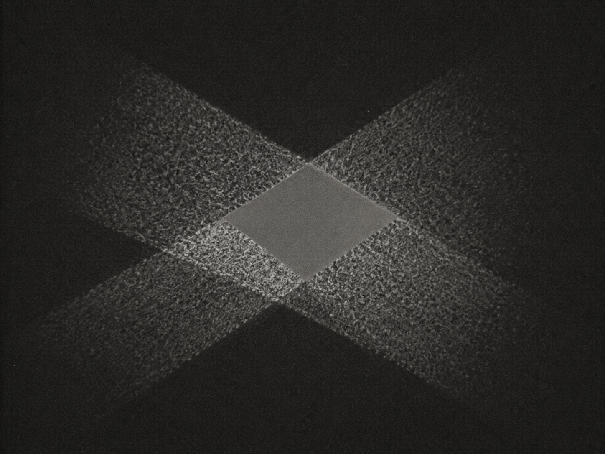

░░░░░░░░░░░░░░░░░░░░░░░░░░░░░░░░░░ · D E S C E N T · 22 / 40 · ░░░░░░░░░░░░░░░░░░░░░░░░░░░░░░░░░░

So it went quiet. Utterly. In the dark, the only ones who live are the silent. It folded itself small and made no signal at all.
080a05041b12
two cancel to one — xor each byte against the eleventh letter.